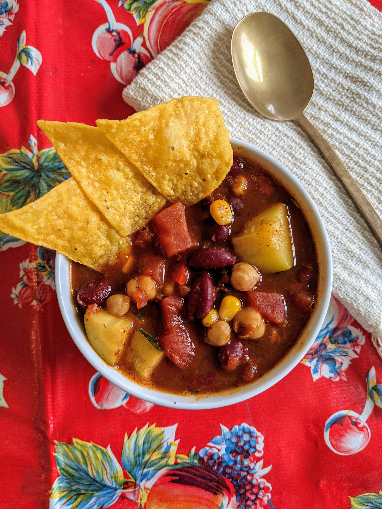

Homemade Slow Cooker Vegan Chili

Description
This makes a huge bowl of vegan chili.
Ingredients
- 1 tablespoon olive oil
- 3 bell peppers, chopped
- 2 onions, chopped
- 4 cloves garlic, chopped
- zucchini, chopped
- 1 yellow squash, chopped
- 1 cup chopped fresh spinach
- 2 (28 ounce) cans diced tomatoes
- 1 (15 ounce) can whole kernel corn, drained
- 1 (15 ounce) can black beans, rinsed and drained
- 1 (15 ounce) can kidney beans, rinsed and drained
- 1 (15 ounce) can garbanzo beans, rinsed and drained
- 1 (12 ounce) can tomato paste
- 1 cup vegetable broth
- 6 tablespoons chili powder
- 1 tablespoon dried oregano
- 1 tablespoon ground cumin
- salt and ground black pepper to taste
Steps
- Heat oil in a large skillet over medium heat; stir in bell peppers and onions. Cook and stir until the onion has softened and turned translucent, about 5 minutes. Add garlic and cook until fragrant, 1 to 2 minutes. Transfer to a slow cooker.
- Add zucchini, yellow squash, and spinach to the slow cooker; stir to combine. Mix in diced tomatoes, corn, black beans, kidney beans, garbanzo beans, tomato paste, vegetable broth, chili powder, oregano, and cumin. Season with salt and pepper.
- Cook on Low for 4 to 5 hours.
Index